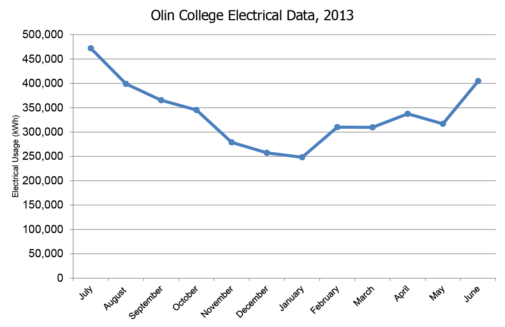

Statistics and Data on Olin
Below you'll find some interesting data on energy consumption at Olin. Understanding our energy usage is integral to understanding how best to approach a solar proposal.
Additionally, here are some links to data sources and reading material from NASA, the EPA, and other relevant sources:
EPA
NASA
NCADAC
IPCC
Student Energy Consumption by Type
According to this data6 found by Olin Alumni Boris Taratutin, 8% of the energy consumed by Olin students is electrical. This may sound insignificant, but keeping in mind the large sums of energy from the graphs above, this is probably due to the fact that Olin students are probably not the main electrical consumers on campus. This graph is interesting because it shows us how we can improve our sustainability practices as individual consumers.

Olin's Energy Consumption by Month for 2013 Fiscal Year
Olin uses the most electricity in during the summer, presumably mostly for air conditioning. In order to ensure that we are using all the energy from the solar panels, the installation should aim to produce the minimum amount of electricity used by the school during the year, which appears to be 250,000 kwh in January. So the installation would ideally produce about 250,000 kwh in January, and produce at least that amount for all other months.
Olin's Cumulative Energy Consumption
This graph shows Olin's cumulative energy consumption for fiscal years 2006 to 2013. There is an obvious trend of declining energy consumption from 2006 to 2009, but after that the data wobbles within narrow parameters.
Sources